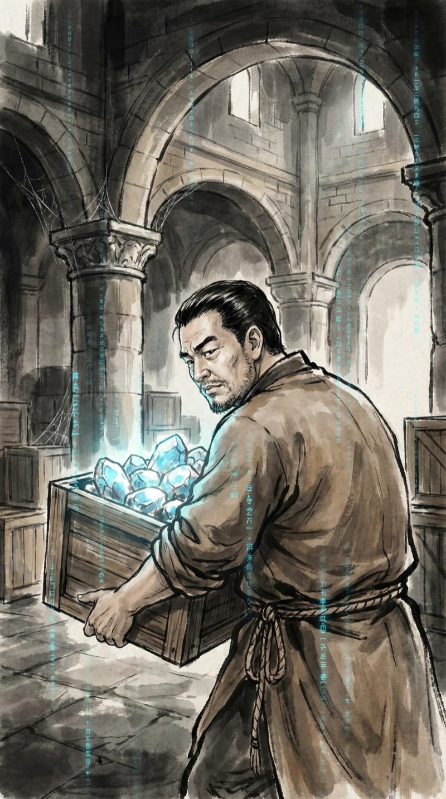
灵山宗外门杂役房。
我叫朱江，搬了三个月灵石了。每天从日出搬到日落，灵石没多少，腰倒是快废了。
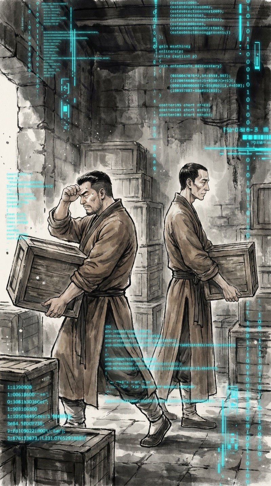
老陈擦了把汗："内门弟子一天的灵石配额，够我们搬一个月。"
我笑了笑："想想看，这不就是公司里实习生和VP的区别吗？"
老陈一脸茫然："什么VP？"
算了，跨世界的比喻果然行不通。
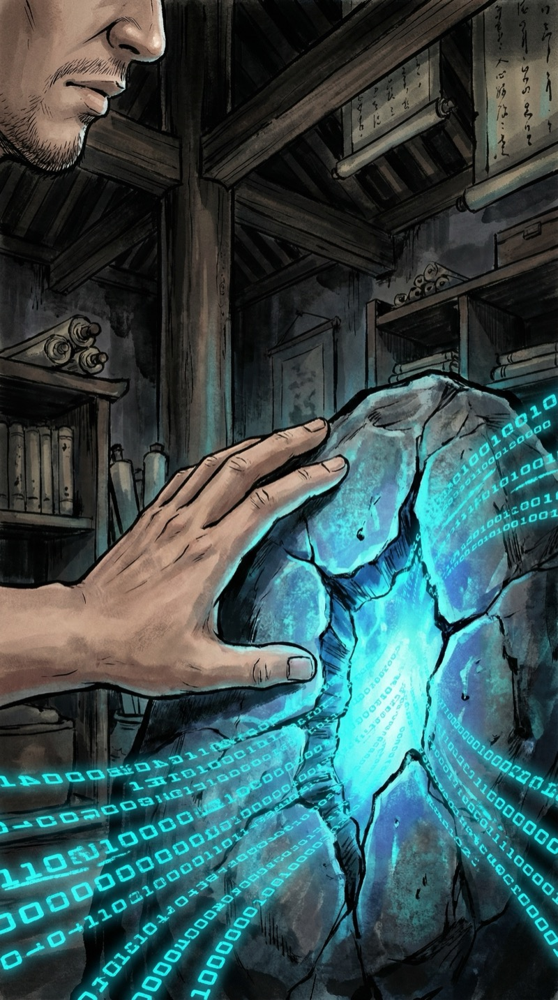
搬到最后一箱时，手指碰到一块有裂纹的灵石。
指尖传来一阵酥麻——
然后，我看见了。
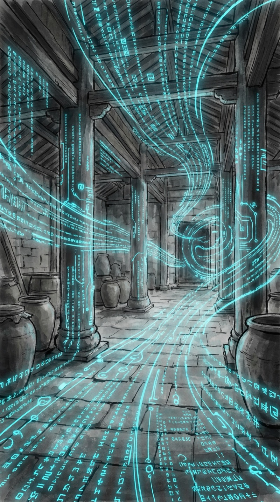
灵气不是什么玄之又玄的东西。它就是代码。运转路径、循环逻辑、资源分配——跟我前世debug的那些系统一模一样。
区别只是，这里的变量名叫"灵气"，函数名叫"功法"，而bug……叫"走火入魔"。
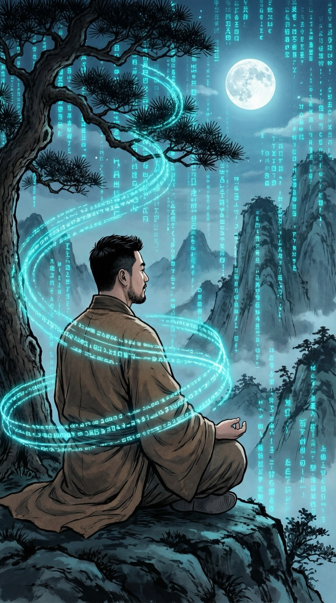
当晚，后山老树下。
我用"代码视角"重新编排了灵气路径。去掉了十七个冗余循环，优化了三处内存泄漏——呃，灵气泄漏。
三个时辰。别人三个月的进度。
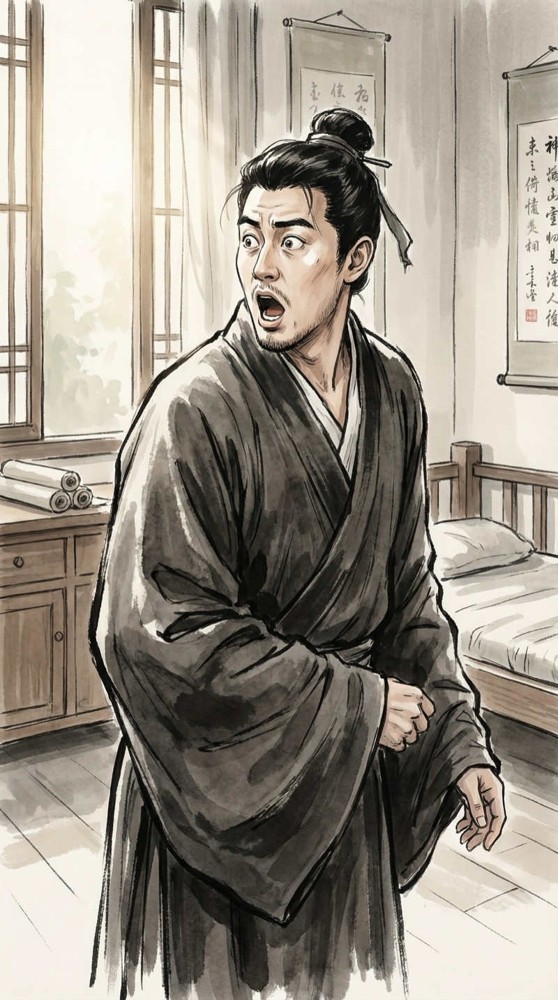
老陈张大嘴巴："你...你突破了？一夜？"
我耸耸肩："不是突破，是debug。"
老陈："你这是修仙还是debug？"
两者有区别吗？
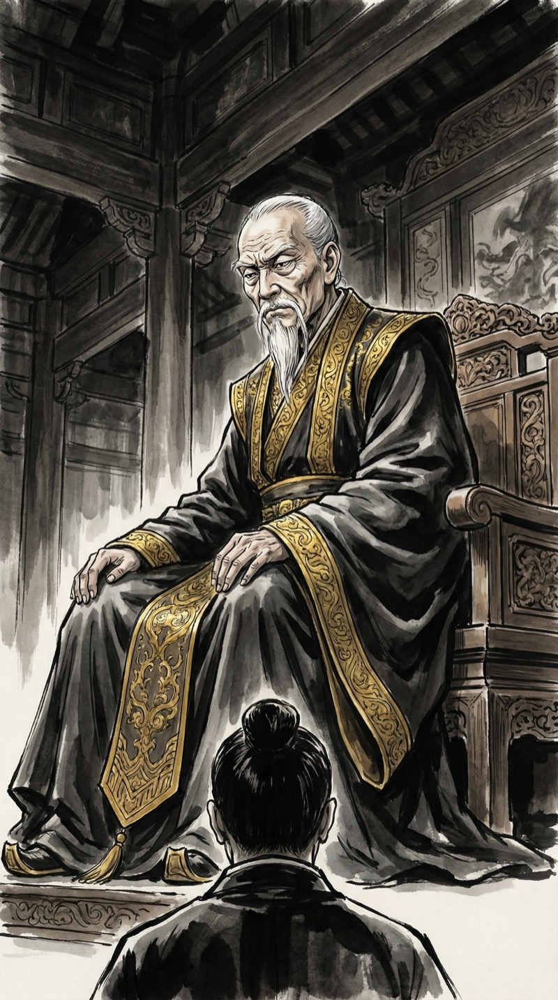
赵长老。灵山宗资源分配委员会主席。
用互联网的话说——垄断市场的大厂高管。手握外门弟子所有灵石的分配权，吃相难看但位子稳如泰山。
他注意到我了。
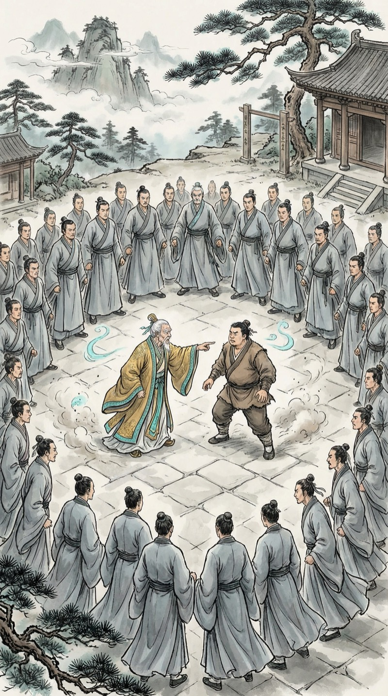
赵长老拍案而起："朱江！你的灵力波动异常，涉嫌使用邪法！交出灵石配额，等候调查！"
周围几十个外门弟子倒吸一口凉气。
来了。创业公司刚有起色，大厂就来"反垄断"了。
⚡ 决策点 1
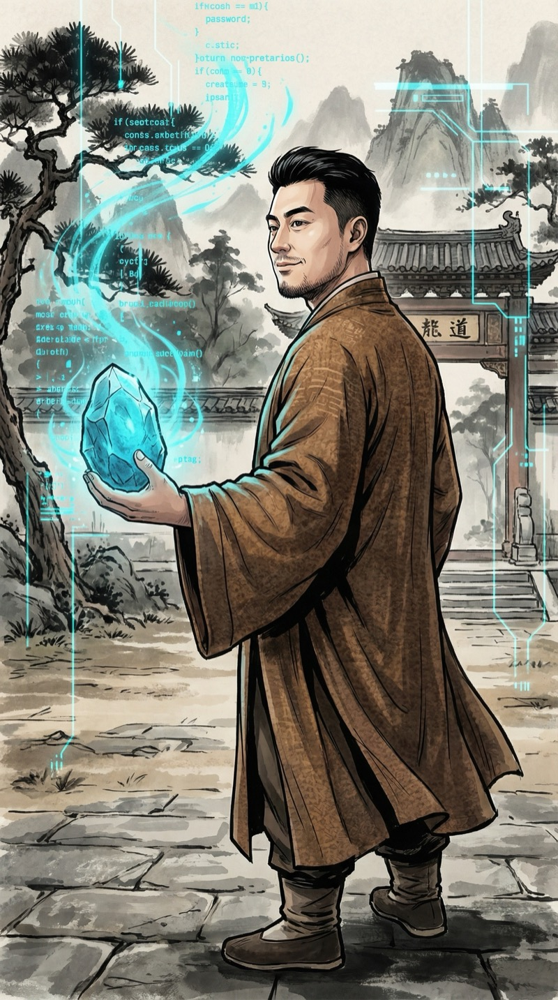
我没争论。菩萨心肠，霹雳手段——用产品说话。
"赵长老，不如我当场演示？"
掌心托起一颗灵石，代码视角启动。蓝绿色的数据流在灵石表面流转。
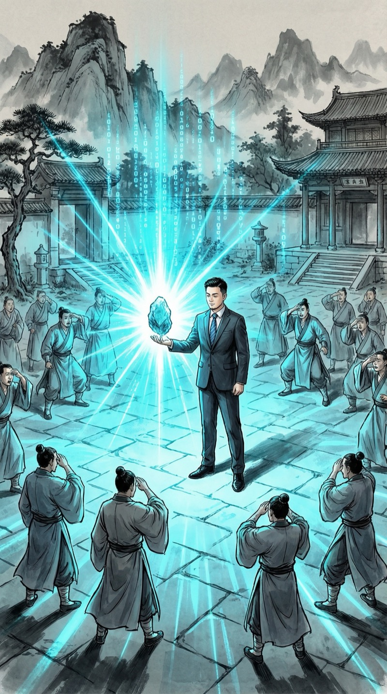
灵石转化效率——传统方法的十倍。
不是我厉害，是传统修炼体系太低效了。相当于用算盘的人第一次看到电脑。
赵长老脸色铁青。场上所有弟子鸦雀无声。
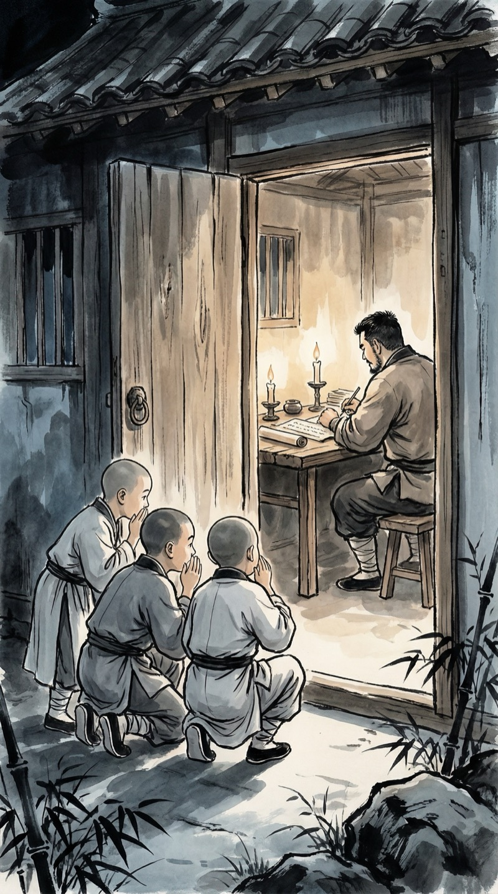
当晚，三个外门弟子偷偷摸到我门口。
"朱师兄，能教我们吗？"
老陈在旁边兴奋得搓手："哥！你这是要开宗立派啊！"
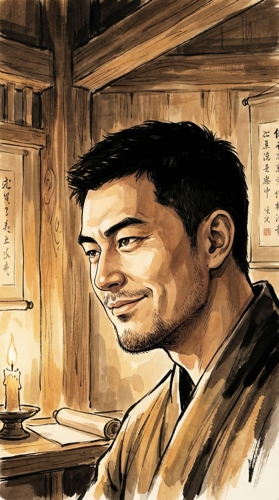
"不。"我端起茶杯，"这叫——天使轮。"
老陈一脸问号："什么天使？我们修的是仙，不是天使。"
有些梗，跨世界确实不太好翻译。但没关系。
三个种子用户到手了。
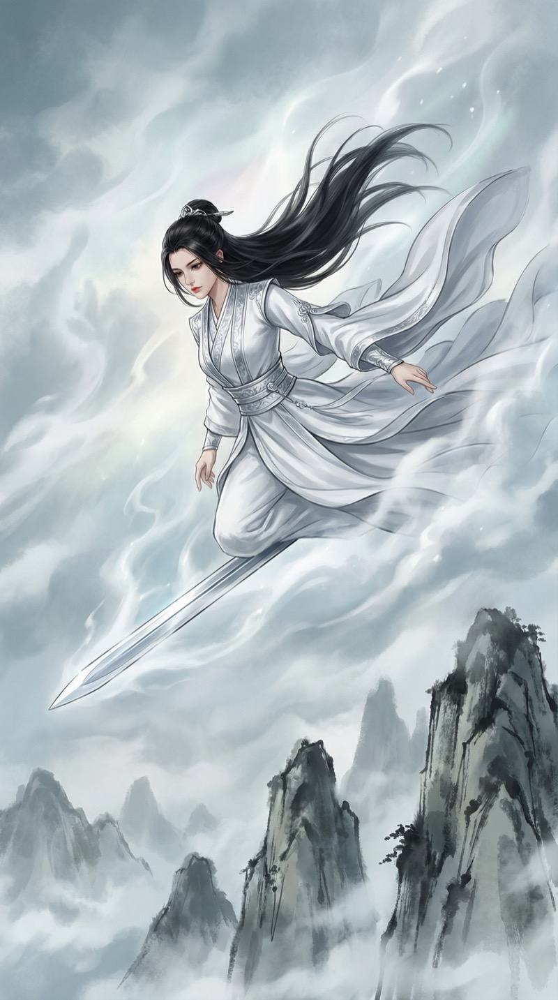
次日。内门天才弟子苏灵——十六岁筑基，灵山宗百年一遇的天才——御剑而至。
"调查异常修炼波动"。翻译一下：大厂来做尽职调查了。
⚡ 决策点 2
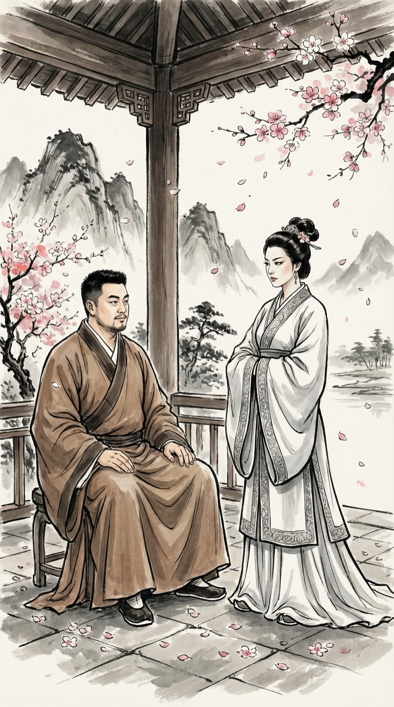
苏灵冷声道："你的修炼方式不合正道。"
我没跪也没傲。
"苏师姐，'正道'是谁定义的？如果我的方法效率更高、效果更好，它是不是也可以是正道？"
对真正有实力的人，保持尊重。不搞零和博弈。
我当面演示了代码修炼法的核心能力——修复灵脉损伤。
这是传统方法做不到的。相当于你告诉一个只会重装系统的人，其实可以热修复。
苏灵的眼神变了。她的世界观，第一次出现了裂痕。
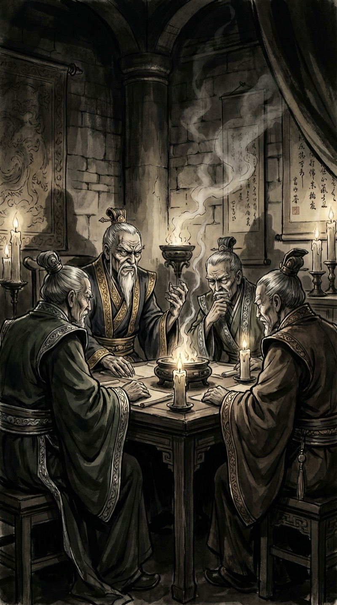
当天夜里。长老密室。
赵长老联合了三位长老。明天宗门大会，要以"邪法蛊惑人心"的罪名弹劾我。
标准操作——当创新威胁既得利益，第一反应永远是"定性为违规"。
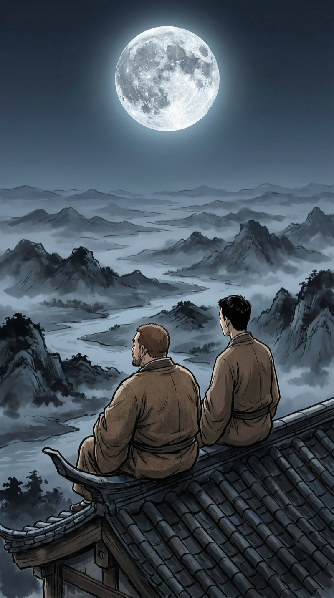
老陈慌了："哥，长老会要搞你！怎么办？"
我望着月亮笑了。
"知道创业最怕什么吗？不是竞争对手，是监管。但监管打不死真正有价值的东西。"
老陈："……你能不能说人话？"
"意思是——别慌。"
⚡ 决策点 3
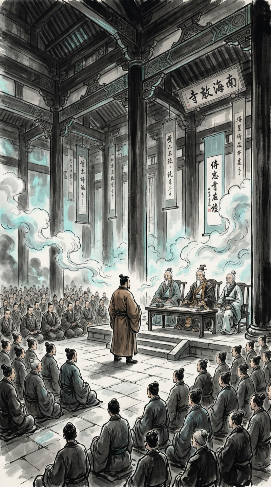
宗门大会。大殿之上，数百弟子。四位长老高居上座。
赵长老："朱江！当众废除你的邪法，否则逐出宗门！"
我深吸一口气——然后笑了。
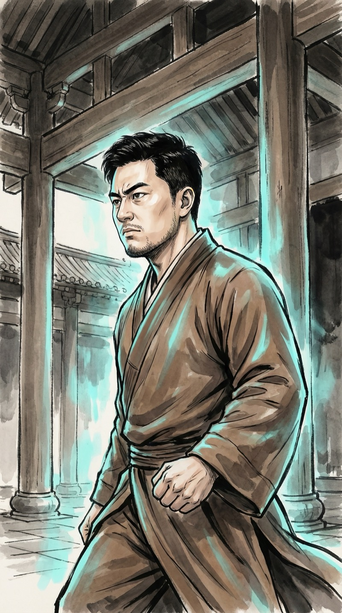
"赌约。"
"给我三天。我用代码修炼法帮宗门最弱的三个弟子突破一个小境界。做不到——我自废修为。做到了——赵长老让出一半外门资源分配权。"
全场哗然。
创业者的all-in。赌的不是运气，是产品。
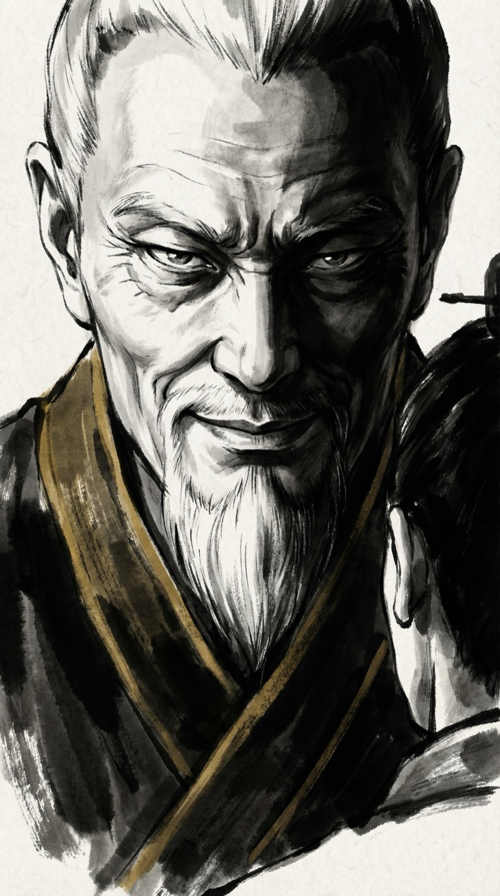
赵长老毫不犹豫地答应了。
他笑得太快了。
因为那三个"最弱弟子"中，有一个灵脉是断的——传统方法根本救不了。
但他不知道的是——
我的代码修炼法，最擅长的就是修复bug。
三天。够了。
—— 第一章 · 终 ——
▸ 下一章：三天之约
赵长老阴险地笑着，因为他藏了一张底牌。
但他不知道，我这辈子最擅长的事情，就是在别人觉得不可能的地方找到bug。